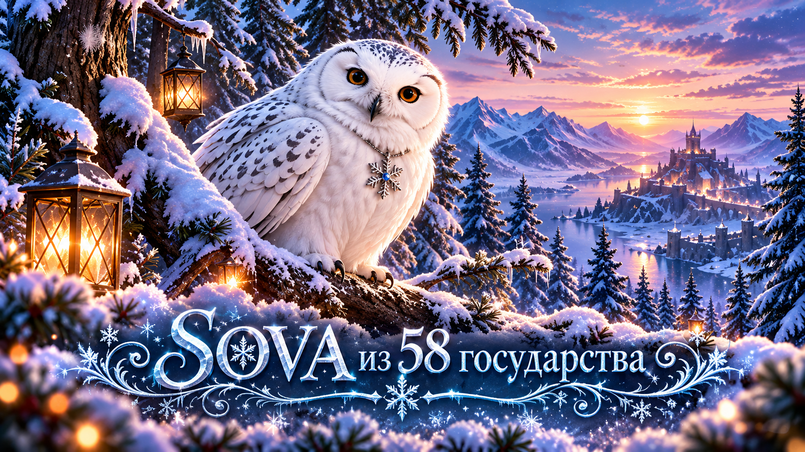

История одной создательницы
SOVA.
Играю в 58 государстве и состою в FOX. Когда-то мне просто надоело искать нужную информацию по чатам, скриншотам и разным источникам. Хотелось, чтобы всё полезное по «Белой мгле» было собрано в одном месте и было понятно без лишней путаницы.
Как всё началось
Так появился этот сайт. Сначала здесь были обычные гайды и подсказки. Потом добавились калькуляторы, база знаний, материалы по событиям и новые разделы.
А дальше сайт начал разрастаться быстрее, чем я успевала говорить: «Ну всё, теперь точно хватит». 😂
Делать сложное понятным
Мне нравится разбираться, как что работает, искать информацию, проверять её и делать понятнее.
Главная идея простая: зашёл → нашёл → понял → пошёл играть дальше.
Откуда берётся информация
Данные на сайте не появляются из одного источника. Обычно я собираю картину по кусочкам, а уже потом превращаю её в готовый материал.
Как я проверяю данные
Я стараюсь не переносить на сайт первую найденную цифру или чужое утверждение как готовый факт. Сначала сравниваю информацию из нескольких мест, смотрю, совпадает ли она с тем, что происходит в игре, и по возможности перепроверяю механику на практике.
Информация от игроков для меня часто становится отправной точкой: кто-то заметил изменение, прислал скриншот или задал вопрос. После этого я ищу подтверждение и только потом оформляю материал.
Если данные пока нельзя подтвердить точно, стараюсь не выдавать предположение за факт. А когда игра меняется, старые материалы приходится пересматривать и обновлять. Поэтому сайт для меня не архив с однажды написанными гайдами, а постоянно меняющаяся база.
Немного про 58-е
Этот сайт появился именно здесь.
Когда-то мне довелось быть президентом 58-го государства. Это был отдельный этап моей игры: организация, решения, события, споры, победы и много всего, что обычно остаётся за кадром.
Сейчас мне больше нравится развивать сайт, придумывать новые функции и делать так, чтобы нужную информацию по «Белой мгле» было проще найти.
- 58-е государство
- Альянс FOX
- Сайт для игроков, который продолжает развиваться
А дальше?
Сайт постоянно меняется. Что-то добавляется потому, что это нужно игрокам. Что-то появляется после хорошего вопроса. А иногда мне просто приходит идея, которую уже невозможно оставить в покое. 😄
Так и появляются новые страницы, калькуляторы, поиск, совы и другие штуки.
И, скорее всего, окончательной версии у этого сайта никогда не будет. Пока развивается «Белая мгла» и появляются новые вопросы, здесь тоже будет появляться что-то новое.
Если однажды вы зайдёте сюда и обнаружите новую страницу, калькулятор или очередную сову… значит, всё идёт по плану. 🦉SOVA · FOX · 58 государство
© 2026 SOVA58. Создатель и администратор проекта «Белая мгла». Авторство приглашённых участников указывается в соответствующих публикациях. Игровые изображения, персонажи и другие сторонние материалы принадлежат их правообладателям.
История разработки ↗